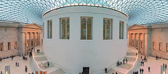
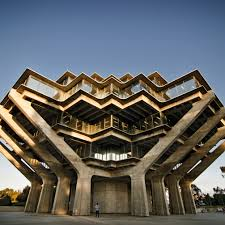
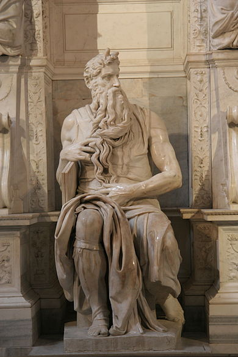
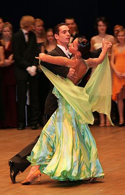

Architecture
 Architecture is the art and science of designing buildings and structures. A wider definition would include the design of the built environment, from the macrolevel of town planning, urban design, and landscape architecture to the microlevel of creating furniture.Architectural design usually must address both feasibility and cost for the builder, as well as function and aesthetics for the user.
Ceramic Art
 Ceramic art is art made from ceramic materials, including clay. It may take forms including artistic pottery, including tableware, tiles, figurines and other sculpture. As one of the plastic arts, ceramic art is one of the visual arts. While some ceramics are considered fine art, as pottery or sculpture, most are considered to be decorative, industrial or applied art objects. Ceramics may also be considered artefacts in archaeology. Ceramic art can be made by one person or by a group of people. In a pottery or ceramic factory, a group of people design, manufacture and decorate the art ware. Products from a pottery are sometimes referred to as "art pottery". In a one-person pottery studio, ceramists or potters produce studio pottery.
Conceptual Art
Conceptual art, also referred to as conceptualism, is art in which the concept(s) or idea(s) involved in the work take precedence over traditional aesthetic, technical, and material concerns. Some works of conceptual art, sometimes called installations, may be constructed by anyone simply by following a set of written instructions
Drawings
Drawing is a means of making an image, using any of a wide variety of tools and techniques. It generally involves making marks on a surface by applying pressure from a tool, or moving a tool across a surface. Common tools are graphite pencils, pen and ink, inked brushes, wax colour pencils, crayons, charcoals, pastels, and markers. Digital tools which can simulate the effects of these are also used. An artist who excels in drawing is referred to as a drafter, draftswoman, or draughtsman. Drawing can be used to create art used in cultural industries such as illustrations, comics and animation.
Photography
Photography as an art form refers to photographs that are created in accordance with the creative vision of the photographer. Art photography stands in contrast to photojournalism, which provides a visual account for news events, and commercial photography, the primary focus of which is to advertise products or services .
Paintings
 Painting is a mode of creative expression, and can be done in numerous forms. Drawing, gesture (as in
gestural
painting), composition, narration (as in narrative art), or abstraction (as in abstract art), among
other
aesthetic modes, may serve to manifest the expressive and conceptual intention of the practitioner.
Paintings can be naturalistic and representational (as in a still life or landscape painting),
photographic,
abstract, narrative, symbolistic (as in Symbolist art), emotive (as in Expressionism), or political in
nature
(as in Artivism).
Painting is a mode of creative expression, and can be done in numerous forms. Drawing, gesture (as in
gestural
painting), composition, narration (as in narrative art), or abstraction (as in abstract art), among
other
aesthetic modes, may serve to manifest the expressive and conceptual intention of the practitioner.
Paintings can be naturalistic and representational (as in a still life or landscape painting),
photographic,
abstract, narrative, symbolistic (as in Symbolist art), emotive (as in Expressionism), or political in
nature
(as in Artivism).
Sculpture
 Sculpture is the branch of the visual arts that operates in three dimensions. It is one of the plastic arts. Durable sculptural processes originally used carving (the removal of material) and modelling (the addition of material, as clay), in stone, metal, ceramics, wood and other materials; but since modernism, shifts in sculptural process led to an almost complete freedom of materials and process. A wide variety of materials may be worked by removal such as carving, assembled by welding or modelling, or moulded, or cast.
Dance
 Dance (from Old French dancier, of unknown origin) generally refers to human movement either used as a form of expression or presented in a social, spiritual or performance setting. Dance is also used to describe methods of non-verbal communication (see body language) between humans or animals (e.g. bee dance, mating dance), motion in inanimate objects (e.g. the leaves danced in the wind), and certain musical forms or genres.
Music
Music is an art form whose medium is sound and silence, occurring in time. Common elements of music are pitch (which governs melody and harmony), rhythm (and its associated concepts tempo, metre, and articulation), dynamics, and the sonic qualities of timbre and texture. The creation, performance, significance, and even the definition of music vary according to culture and social context. Music ranges from strictly organized compositions (and their reproduction in performance) through improvisational music to aleatoric pieces. Music can be divided into genres and subgenres, although the dividing lines and relationships between music genres are often subtle, sometimes open to individual interpretation, and occasionally controversial. Within "the arts", music may be classified as a performing art, a fine art, and auditory art